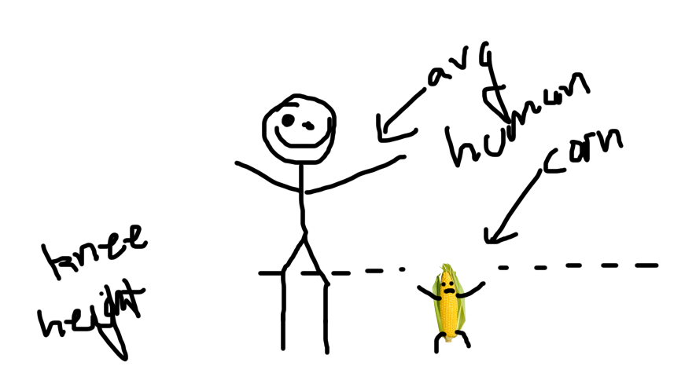
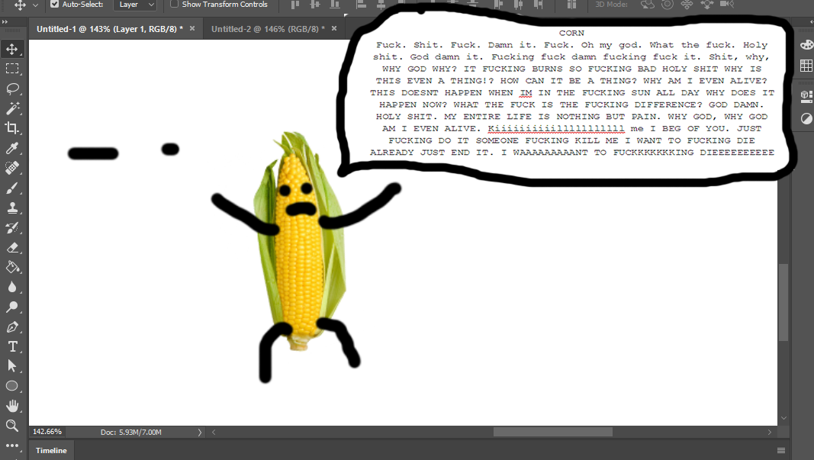

this is corn. corn has no gender. corn did not ask to be born. free the corn. kill the corn. corn asks to be killed.
corn reminds us that existence is meaningless. we can all learn a thing or two from corn.
according to the lore (thelma & louise 2: army of dakness), corn was animated by the necromancer kale ren. corn did not consent to this. like all of us, corn did not choose to be born.
because corn is made of corn, corn acts in ways that may be different than you or me. it is possible that this may create a disconnect between us, perhaps making corn less relatable. in such times of corn's unique agony, it is important to view corn as more of a metaphor. we, as humans, do not need to avoid the sunlight or fire because it would heat up our kernels and make us explode. however, we avoid the sun because the sun is the sign of the outdoors, a wasteland of probable social situations.
corn is also a lot smaller than the average human:  however, this does not mean that the suffering of corn is any less than ours. if anything, corn's suffering is more raw. with less flesh to cushion the blows of reality, corn is more exposed to existence.
maybe it is the purity of corn's suffering, or maybe corn has, unlike you or me, yet to learn to suppress it all, but corn is prone to outburts of existential dread. make no mistake, if corn is not yelling it is not because corn is not suffering. corn suffers at all times. not yelling is simply a means of energy preservation.
perhaps we all started out like corn. maybe the only difference is that, for convenience, corn was given the ability to communicate from it's conception. we had nothing more than screams and cries when corn had the ability to articulate. but from those screams we birthed a culture. one day, perhaps, corn will, too, indulge in societal trends and satisfy itself with nothing more than internet memes.